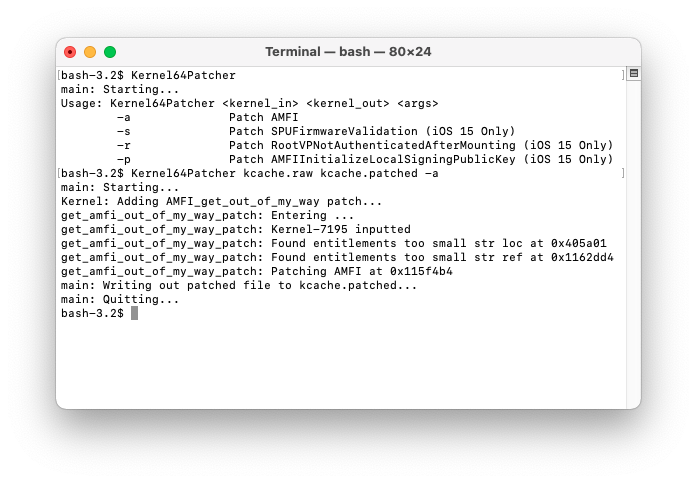

Patching Bootchain
Decrypt iBSS and iBEC:
Firmware keys and proper component names can be found here.
img4 -i iBSS.* -o iBSS.dec iv_key
img4 -i iBEC.* -o iBEC.dec iv_key
And patch signature checks using iBoot64Patcher:iBoot64Patcher iBSS.dec iBSS.patched
Now pack into img4:
img4 -i iBSS.patched -o iBSS.img4 -M IM4M -A -T ibss
Important: we need to create two patched iBEC files; One for booting the custom ramdisk, and one for booting the new system.
For booting the second iOS install, iBEC needs an arg which will point it towards the new partition. Add rd=disk0s1s3 (or your new system partition disk) and -v args to iBEC:iBoot64Patcher iBEC.dec iBEC.patched -b “rd=disk0s1s3 -v”
 For booting the custom ramdisk, add rd=md0 restore -v args to iBEC:
For booting the custom ramdisk, add rd=md0 restore -v args to iBEC:
iBoot64Patcher iBEC.dec iBECramdisk.patched -b “rd=md0 -restore -v”
Now pack them back into img4:img4 -i iBECramdisk.patched -o iBECramdisk.img4 -M IM4M -A -T ibec
img4 -i iBEC.patched -o iBEC.img4 -M IM4M -A -T ibec
Great! now there are two different iBEC files you have created. One for booting the ramdisk, and the other for booting the actual system later on.
Note: the rd argument in iBEC stands for "root device", or the target volume iBoot will try to start the system from. md0 always refers to a ramdisk in memory, and disk0s1sX is a disk partition.
Patching Kernelcache:
AMFI
We need to patch amfi in kernel to make the ramdisk load custom binaries. Unpack the kernelcache:
img4 -i kernelcache.* -o kcache.raw
Automatically Patching
To simplify dual booting process I wrote a utility based on patchfinder64 that will automatically patch the kernel:Kernel64Patcher kcache.raw kcache.patched -a
 Create a patch file:touch kc.bpatch
Note: you can use Hex Fiend to compare the original raw kernelcache and patched kernelcache or this python script for creating diff file:python3 compareFiles.py kcache.raw kcache.patched
 Apply it and sign using img4:
Apply it and sign using img4:
img4 -i kernelcache.release.* -o kernelcache.img4 -M IM4M -T rkrn -P kc.bpatch
Now sign trustcache (on iOS 12+) using same apticket:img4 -i *.im4p -o *.img4 -M IM4M
DeviceTree
Pack devicetree into img4 with rdtr (RestoreDevicetree) tag. The devicetree needs this tag, otherwise iBEC will refuse to see it as valid:
img4 -i devicetree.XXXXX.im4p -o devicetree.img4 -M IM4M -T rdtr
Done!